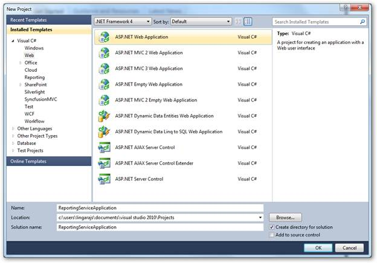
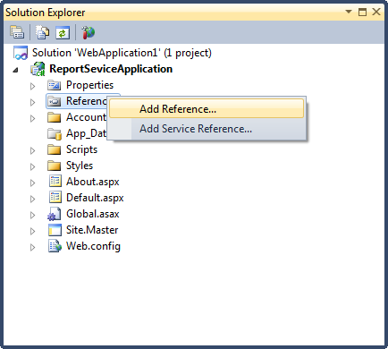
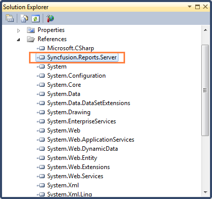
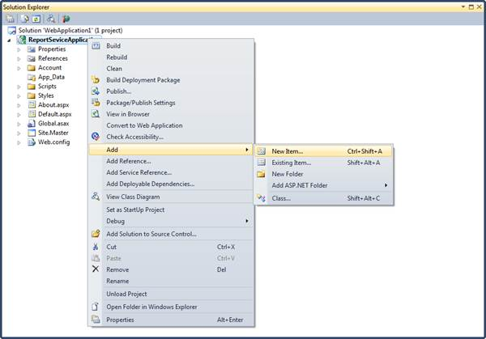
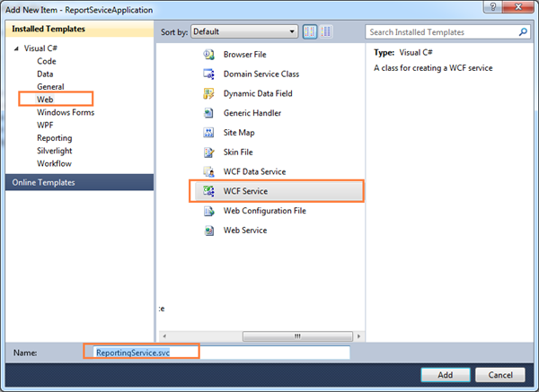
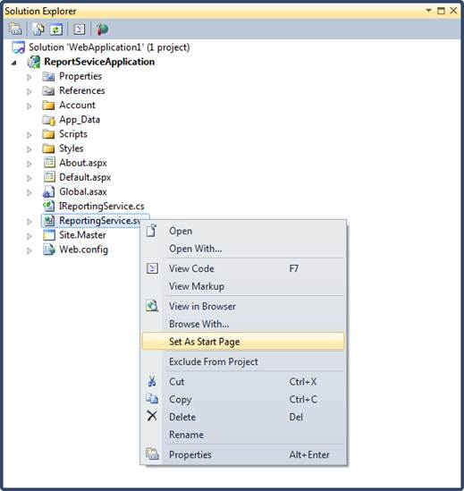
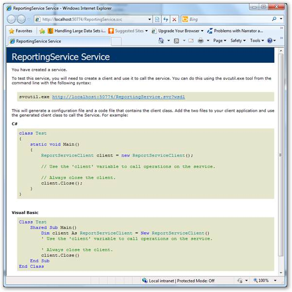
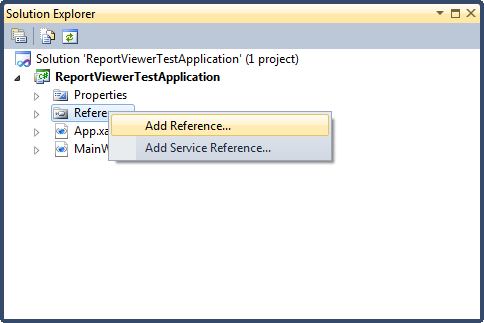
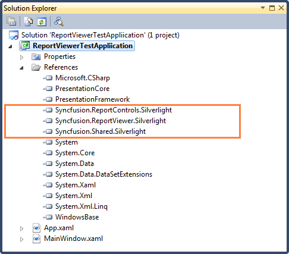
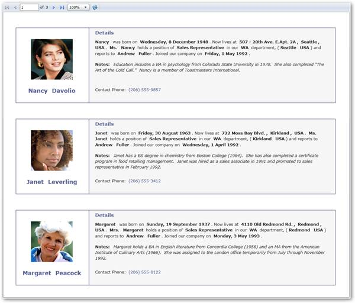

Users can create a simple application through coding with Syncfusion Silverlight ReportViewer Control using the following steps.
1. Create a new web application in VS2010.

Figure 19: Create Application
2. On the Solution Explorer, right-click on References folder, and then click Add Reference.

Figure 20: Adding new References
 Note: The added references will appear under
References folder.
Note: The added references will appear under
References folder.

Figure 21: Added References
3. To add a new WCF service file in the web application, right-click on the newly added web application under Solution Explorer dialog.

Figure 22: Adding New Item
4. Click Add and select New Item. The Add New Item dialog will open.

Figure 23: Adding New WCF Service file
5. Click Web under Visual C#.
6. Click WCF Service, and then click Add.
7. Update following changes in the auto generated WCF service file.
using System; using System.Collections.Generic; using System.Linq; using System.Runtime.Serialization; using System.ServiceModel; using System.Text; namespace ReportingServiceApplication { public class ReportingService : Syncfusion.Reports.Server.ReportService { }} |
Note: The added WCF service file will appear under
the created web application.

Figure 24: Set As Start Page option in Solution Explorer
8. Right-click on the newly added WCF service file and select Set As Start Page.
9. Run the service application. The service information is displayed.

` Figure 25: Created Service
10. Create a new Silverlight application in VS2010.
11. Add Report Viewer and related references to the newly created Silverlight application.

Figure 26: Adding Reference
Note: The added reference will appear under
References folder.

Figure 27:Added References
12. Set the Grid control with auto generated XAML information of Main Window and name.
<UserControl x:Class="ReportViewerTestApplication.MainPage" xmlns="http://schemas.microsoft.com/winfx/2006/xaml/presentation" xmlns:x="http://schemas.microsoft.com/winfx/2006/xaml" xmlns:d="http://schemas.microsoft.com/expression/blend/2008" xmlns:mc="http://schemas.openxmlformats.org/markup-compatibility/2006" mc:Ignorable="d" d:DesignHeight="400" d:DesignWidth="400" xmlns:my="clr- namespace:Syncfusion.Windows.Reports.Viewer;assembly=Syncfusion.ReportViewer.Silverlight"> <Grid x:Name="LayoutRoot" Background="White"> </Grid> </UserControl> |
13. Add Report Viewer in MainWindow grid.
public partial class MainPage : UserControl {public MainPage() { InitializeComponent(); // ReportViewer control initialization Syncfusion.Windows.Reports.Viewer.ReportViewer reportViewer1 = new Syncfusion.Windows.Reports.Viewer.ReportViewer(); // Set ProcessingMode for ReportViewer. To load and process the DataSource information from server reportViewer1.ProcessingMode = Syncfusion.Windows.Reports.Viewer.ProcessingMode.Remote; // Set ReportPath to view the Report in ReportViewer. Local rep ortpath of hosted service environmentreportViewer1.ReportPath = @"D:\MailMerge.Rdl"; // Set ReportServiceUrl to retrive data from hosted service reportViewer1.ReportServiceURL = @"http://localhost:50774/Repor tingService.svc"; // Add ReportViewer in MainWindow grid this.LayoutRoot.Children.Add(reportViewer1); this.Loaded += (sender, arg) => {// To Render the Report in ReportViewer. reportViewer1.RefreshReport(); }; } } |
14. Run the application. The following output displays.

Figure 28:ReportViewer Sample